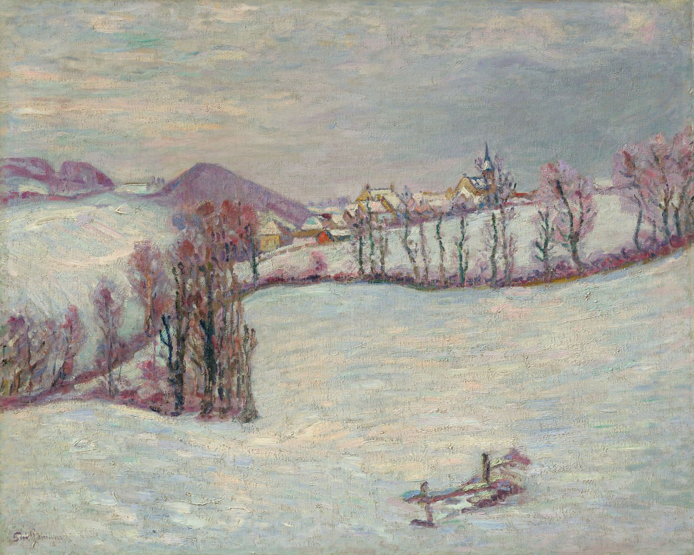

Жан-Батист Арман Гийомен
Vue du Puy-de-Dôme (Вид на Пюи-де-Дом), 1899

Холст, масло, 65 x 81 см
Музей Барберини, Потсдам.
Арман Гийомен предпочитал использовать в своих пейзажах яркие цветовые сочетания. Большую часть картины занимает снежное пространство, изображённое в тонких оттенках синего и розового. Акцент на поверхностях и контурах указывает на стилистическое отхождение от импрессионизма.
Происхождение
Galerie Zak, Париж, 1959 г. Доктор Оскар Гез, Швейцария, без даты Wally Findley Galleries, Париж, 1972 г. Музей современного искусства Пти-Пале, Женева, 1996 г. Частная коллекция, Швейцария, без даты Частная коллекция, приобретена у вышеуказанного владельца, без даты Аукционный дом Sotheby’s, Лондон, выставлен вышеуказанным лицом, 4 февраля 2010 г., не продана Арт-рынок, август 2011 г.